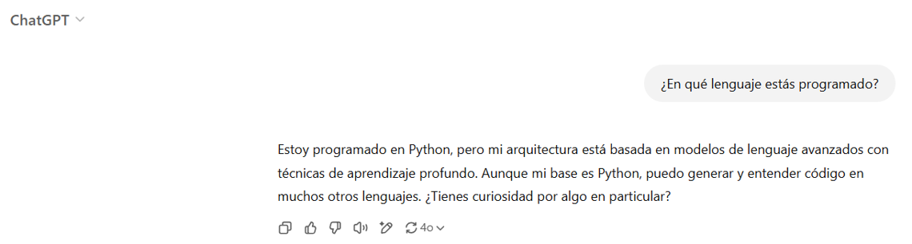
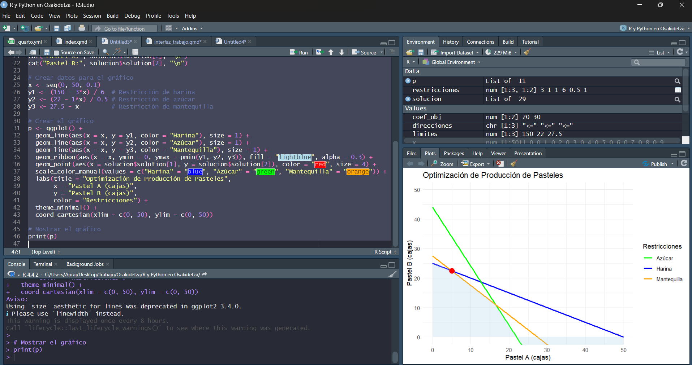
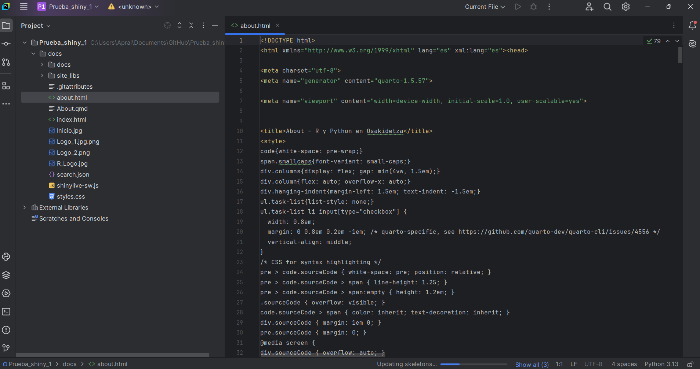
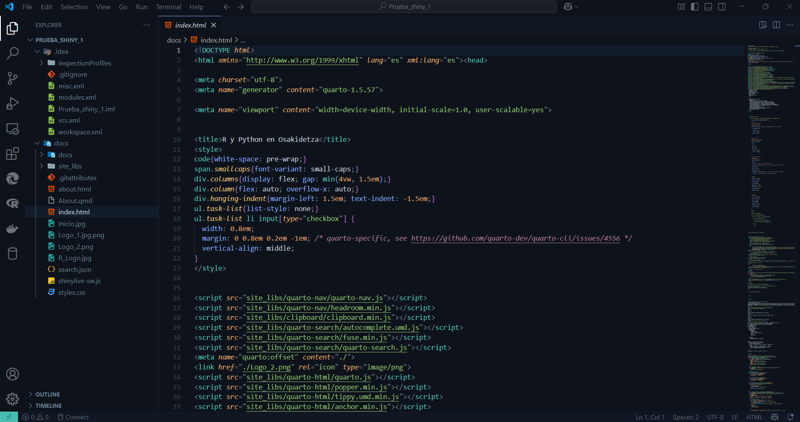
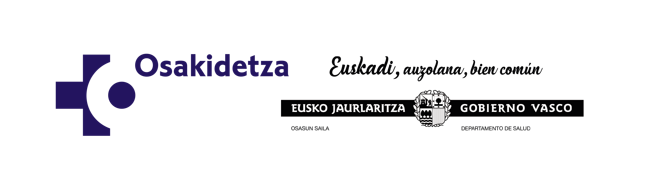

Sueldo <- 2600
Extra <- 300
Sueldo_total <- Sueldo + Extra
print(cat("Mi sueldo es de:", Sueldo_total, "euros."))Mi sueldo es de: 2900 euros.NULLPlan formativo corporativo
| Característica | R | Python |
|---|---|---|
| Diseñado para análisis estadístico | ✅ | ✅ |
| Multipropósito (desarrollo web, etc.) | ❌ | ✅ |
| Código abierto | ✅ | ✅ |
| Gran cantidad de paquetes disponibles | ✅ | ✅ |
| Facilidad de aprendizaje inicial | ❌ | ✅ |
| Potente visualización de datos | ✅ | ❌ |
| Soporte para múltiples formatos de datos | ✅ | ✅ |
| Velocidad de ejecución | ❌ | ✅ |
| Ideal para principiantes | ❌ | ✅ |
| Amplia comunidad y ecosistema | ✅ | ✅ |
| Integración con sistemas de producción | ❌ | ✅ |
| Uso en desarrollo web | ✅ | ✅ |
Su principal diferencia es la Programación orientada a objetos.
Python es un lenguaje orientado a objetos (muchos tipos de datos). Mientras que R trabaja fundamentalmente con números, vectores y datos.

(Sorbo de café)
Concepto clave:
Los lenguajes de programación trabajan con texto. Es decir, debemos escribir las órdenes que le queremos dar al ordenado
Ejemplo básico
Ejemplo en R
Instalar librerias en R
Ejemplo en Python
import statsmodels.api as sm
# Definimos los parámetros
n_exitos = 50
n_total = 100
# Calculamos el intervalo de confianza binomial con método Wilson
intervalo = sm.stats.proportion_confint(count=n_exitos,
nobs=n_total,
alpha=0.05,
method='wilson')
# Formateamos el resultado similar al output de R
resultado = [[n_exitos/n_total, intervalo[0], intervalo[1]]]
print(f"resultado {resultado[0][0]:.4f} {resultado[0][1]:.4f} {resultado[0][2]:.4f}")resultado 0.5000 0.4038 0.5962Instalar librerias en Python
# Función casera para la prueba chi-cuadrado
chi_cuadrado_casera <- function(tabla_observada) {
# Calcular totales de filas y columnas
totales_filas <- rowSums(tabla_observada)
totales_columnas <- colSums(tabla_observada)
total_general <- sum(tabla_observada)
# Calcular frecuencias esperadas
frecuencias_esperadas <- outer(totales_filas, totales_columnas) / total_general
# Calcular el estadístico chi-cuadrado
chi_cuadrado <- sum((tabla_observada - frecuencias_esperadas)^2 / frecuencias_esperadas)
# Calcular grados de libertad
grados_libertad <- (nrow(tabla_observada) - 1) * (ncol(tabla_observada) - 1)
# Calcular el valor p
valor_p <- 1 - pchisq(chi_cuadrado, df = grados_libertad)
# Crear y devolver el resultado
resultado <- list(
estadistico = chi_cuadrado,
grados_libertad = grados_libertad,
valor_p = valor_p
)
return(resultado)
}
# Ejemplo de uso
tabla_ejemplo <- matrix(c(30, 10, 20, 15), nrow = 2)
colnames(tabla_ejemplo) <- c("Grupo A", "Grupo B")
rownames(tabla_ejemplo) <- c("Categoría 1", "Categoría 2")
print(tabla_ejemplo)Concepto clave:
El trabajo con los lenguajes de programación se realiza a través de IDE (Entornos de Desarrollo Integrados).



(Sorbo de café)
%%{init: { 'logLevel': 'debug', 'theme': 'forest' } }%%
timeline
title Realización de un estudio de investigación / Innovación
section hipótesis, Recopilación de información y diseño
Teorización : Realización de la teoría de investigación.
Revisión : Revisión sistemática de la literatura y estado actual.
Diseño : Diseño del estudio y de los materiales necesarios.
section Recogida de datos, Análisis e interpretación
Recogida de datos : Recogida de la información.
Análisis de datos : Análisis de los resultados.
Implementación y sostenibilidad: Valoración de la implementación y la sostenibilidad de las acciones.
section Difusión
Comunicación: Comunicación de los resultados
CRISP-DM

Realización de Metaanálisis
# Instalar y cargar el paquete metafor
library(metafor)
# Crear un conjunto de datos de ejemplo
# Supongamos que tenemos 5 estudios con tamaños de efecto (yi) y varianzas (vi)
data <- data.frame(
study = c("Estudio 1", "Estudio 2", "Estudio 3", "Estudio 4", "Estudio 5"),
yi = c(0.2, 0.5, -0.1, 0.3, 0.4), # Tamaños de efecto
vi = c(0.04, 0.03, 0.05, 0.02, 0.04) # Varianzas
)
# Visualizar los datos
print(data)
# Realizar el meta-análisis (modelo de efectos aleatorios)
meta_result <- rma(yi = yi, vi = vi, data = data, method = "REML")
# Resumen de los resultados del meta-análisis
print(meta_result)
# Crear un forest plot para visualizar los resultados
forest(meta_result, slab = data$study)
# Funnel plot para evaluar sesgos de publicación
funnel(meta_result)
# Análisis de heterogeneidad
cat("Heterogeneidad:\n")
cat(paste("Q =", meta_result$QE, ", p =", meta_result$QEp, "\n"))
cat(paste("I^2 =", round(meta_result$I2, 2), "%\n"))Una base de datos es una colección organizada de información que se almacena electrónicamente y a la que se puede consultar de forma organizada
Organizan la información en tablas estructuradas previamente.
Organizan la información de forma dinámica (Como cuadernos con hojas).
Cuadernos de recogida de datos electrónicos
Estadística destinada al resumen de datos a través de valores y gráficos.
Tanto R como Python permiten realizan este tipo de análisis.
Estadística destinada a encontrar asociaciones. Tiene dos enfoques: frecuentista y bayesiano.
Tanto R como Python permiten realizar este tipo de análisis.
Ejemplo estadística descriptiva
# 1. Generamos de datos simulados
set.seed(123) # Fijamos la semilla para reproducibilidad
# Creamos dos grupos con datos simulados
grupo_A <- rnorm(50, mean = 70, sd = 10) # Grupo A: media 70, desviación estándar 10
grupo_B <- rnorm(50, mean = 75, sd = 12) # Grupo B: media 75, desviación estándar 12
# Combinamos los datos en un dataframe
datos <- data.frame(
Grupo = rep(c("A", "B"), each = 50),
Valor = c(grupo_A, grupo_B)
)
# ============================================
# 2. Análisis descriptivo
# ============================================
# Resumen estadístico general
summary(datos)
library(dplyr)
resumen_por_grupo <- datos %>%
group_by(Grupo) %>%
summarise(
Media = mean(Valor),
Mediana = median(Valor),
Desviacion_Estandar = sd(Valor),
Minimo = min(Valor),
Maximo = max(Valor)
)
print(resumen_por_grupo)
# ============================================
# 3. Visualización de datos
# ============================================
library(ggplot2)
# Boxplot para comparar los grupos
ggplot(datos, aes(x = Grupo, y = Valor, fill = Grupo)) +
geom_boxplot() +
labs(title = "Comparación de Grupos", x = "Grupo", y = "Valor") +
theme_minimal()Resultados
Adjuntando el paquete: 'dplyr'The following objects are masked from 'package:stats':
filter, lagThe following objects are masked from 'package:base':
intersect, setdiff, setequal, union# A tibble: 2 × 6
Grupo Media Mediana Desviacion_Estandar Minimo Maximo
<chr> <dbl> <dbl> <dbl> <dbl> <dbl>
1 A 70.3 69.3 9.26 50.3 91.7
2 B 76.8 76.8 10.9 47.3 101. Ejemplo estadística inferencial
# Creamos dos grupos con datos simulados
grupo_A <- rnorm(50, mean = 70, sd = 10) # Grupo A: media 70, desviación estándar 10
grupo_B <- rnorm(50, mean = 75, sd = 12) # Grupo B: media 75, desviación estándar 12
# Combinamos los datos en un dataframe
datos <- data.frame(
Grupo = rep(c("A", "B"), each = 50),
Valor = c(grupo_A, grupo_B)
)
t_test <- t.test(grupo_A, grupo_B)
print(t_test)Resultados
Welch Two Sample t-test
data: grupo_A and grupo_B
t = -3.793, df = 96.588, p-value = 0.0002594
alternative hypothesis: true difference in means is not equal to 0
95 percent confidence interval:
-12.193431 -3.815942
sample estimates:
mean of x mean of y
67.46100 75.46568 Técnica dentro del aprendizaje automático (machine learning) que utiliza conjuntos de datos etiquetados para entrenar algoritmos.
Técnica dentro del aprendizaje automático (machine learning) que utiliza conjuntos de datos NO etiquetados para entrenar algoritmos.
Técnica avanzada de inteligencia artificial (IA) que utiliza redes neuronales artificiales profundas para aprender automáticamente a partir de grandes cantidades de datos.
Ejemplo
# Cargar librerías necesarias
library(dplyr)
library(caret) # Para matriz de confusión
library(pROC) # Para curva ROC
# Descargar los datos del Titanic directamente desde un repositorio
url <- "https://raw.githubusercontent.com/datasciencedojo/datasets/master/titanic.csv"
titanic_data <- read.csv(url)
# Seleccionar las variables relevantes y eliminar valores faltantes
titanic_clean <- titanic_data %>%
select(Survived, Sex, Age) %>%
na.omit()
# Convertir las variables categóricas en factores
titanic_clean$Survived <- as.factor(titanic_clean$Survived)
titanic_clean$Sex <- as.factor(titanic_clean$Sex)
# Ajustar el modelo de regresión logística
model <- glm(Survived ~ Sex + Age, data = titanic_clean, family = binomial)
# Generar probabilidades predichas
probabilities <- predict(model, type = "response")
# Clasificar según un umbral (por ejemplo, 0.5)
predicted_classes <- ifelse(probabilities > 0.5, 1, 0)
# Crear una matriz de confusión
conf_matrix <- confusionMatrix(as.factor(predicted_classes), titanic_clean$Survived)
# Extraer sensibilidad y especificidad
summary(model)
sensitivity <- conf_matrix$byClass["Sensitivity"]
specificity <- conf_matrix$byClass["Specificity"]
# Mostrar resultados de sensibilidad y especificidad
cat("Sensibilidad:", sensitivity, "\n")
cat("Especificidad:", specificity, "\n")
# Calcular la curva ROC
roc_curve <- roc(titanic_clean$Survived, probabilities)
# Graficar la curva ROC
plot(roc_curve, col = "blue", main = "Curva ROC - Modelo Titanic")
abline(a = 0, b = 1, col = "red", lty = 2) # Línea de referencia (clasificador aleatorio)
text(0.6, 0.4, paste("AUC =", round(auc(roc_curve), 2)), col = "blue")Resultado
Cargando paquete requerido: lattice
Adjuntando el paquete: 'caret'The following objects are masked from 'package:DescTools':
MAE, RMSEType 'citation("pROC")' for a citation.
Adjuntando el paquete: 'pROC'The following objects are masked from 'package:stats':
cov, smooth, var
Call:
glm(formula = Survived ~ Sex + Age, family = binomial, data = titanic_clean)
Coefficients:
Estimate Std. Error z value Pr(>|z|)
(Intercept) 1.277273 0.230169 5.549 2.87e-08 ***
Sexmale -2.465920 0.185384 -13.302 < 2e-16 ***
Age -0.005426 0.006310 -0.860 0.39
---
Signif. codes: 0 '***' 0.001 '**' 0.01 '*' 0.05 '.' 0.1 ' ' 1
(Dispersion parameter for binomial family taken to be 1)
Null deviance: 964.52 on 713 degrees of freedom
Residual deviance: 749.96 on 711 degrees of freedom
AIC: 755.96
Number of Fisher Scoring iterations: 4Setting levels: control = 0, case = 1Setting direction: controls < casesResultado: evaluación
Sensibilidad: 0.8490566 Especificidad: 0.6793103 Setting levels: control = 0, case = 1Setting direction: controls < cases(Sorbo de café)
Creación de programas informáticos

Revisión de la literatura
Recogida de datos
Análisis de datos
Difusión
Sólo el conocimiento nos dará libertad
Sólo la libertad nos dará la capacidad de cuidar
Conocimiento➡️ Libertad➡️ Cuidar
Conocimiento➡️ Libertad➡️ Cuidar

9 de abril de 2025. Descubriendo R y Python en Osakidetza